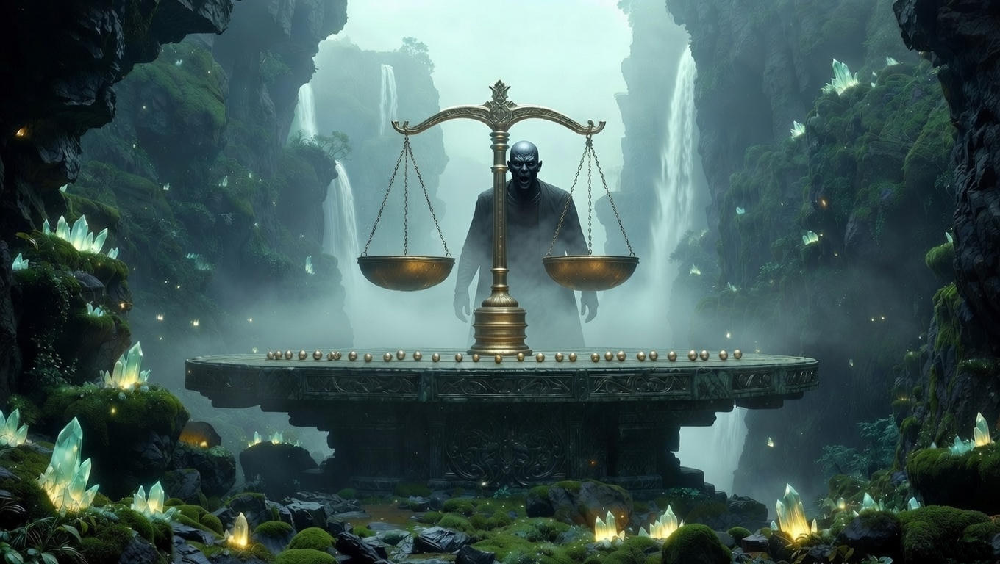
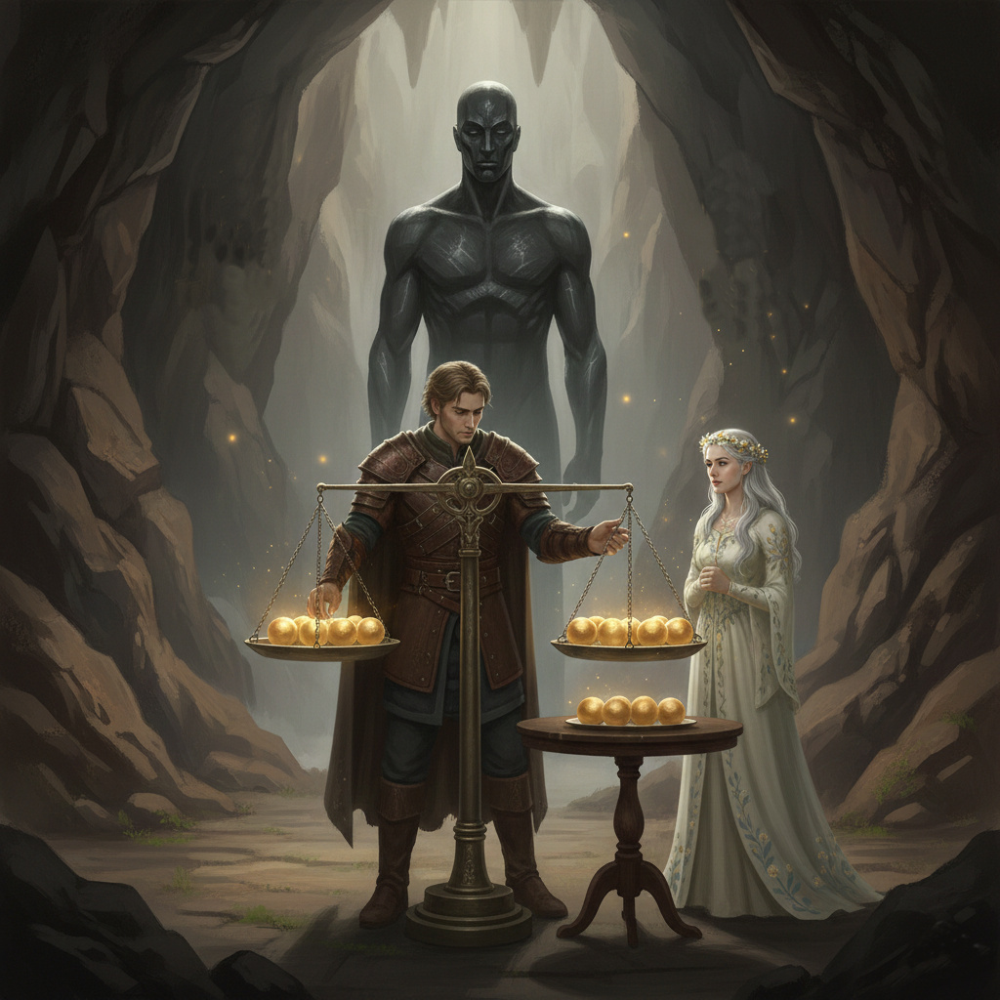
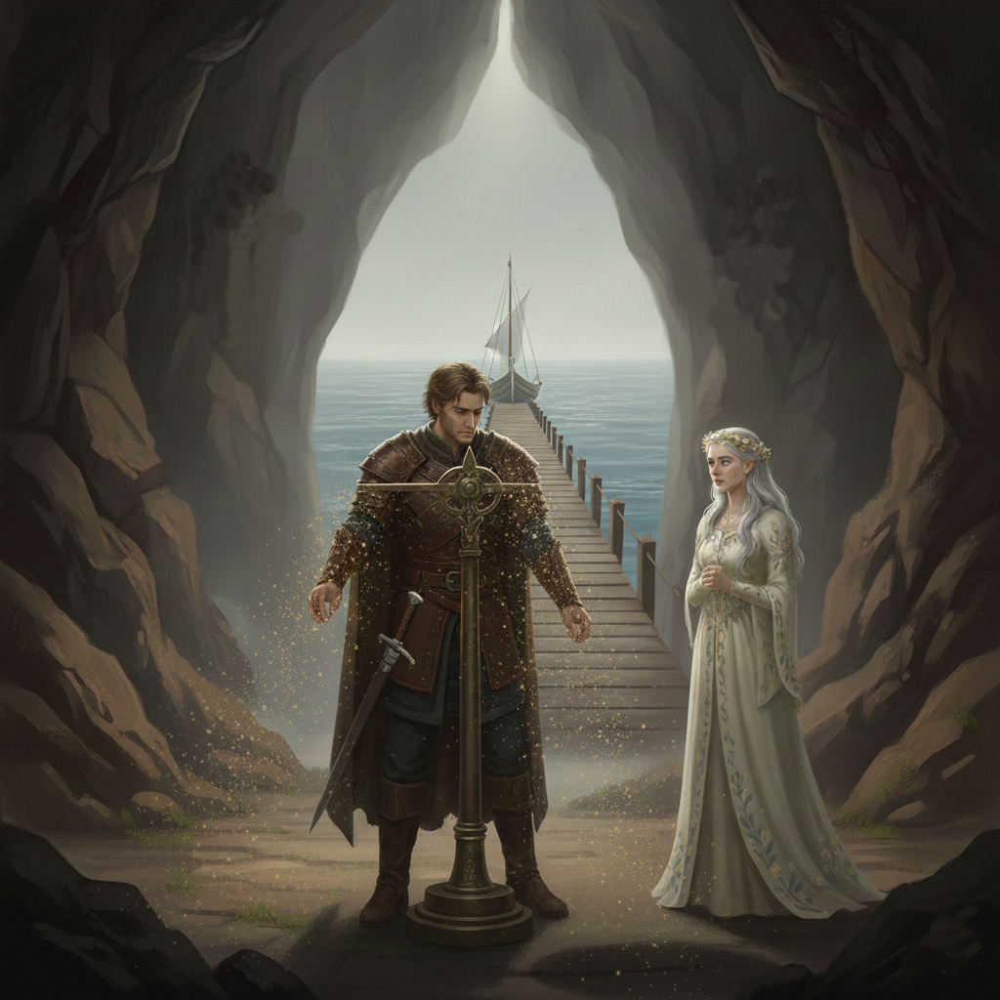
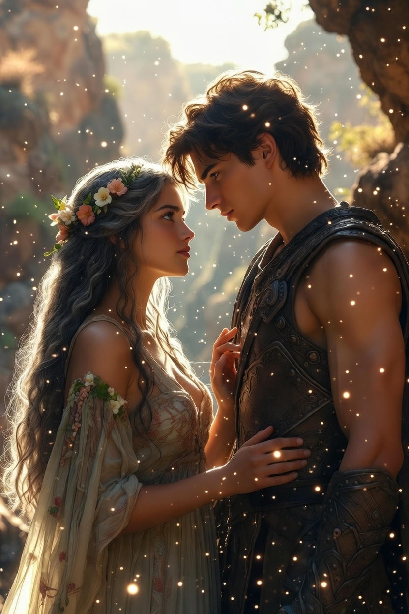

Ajánlom egy kedves barátomnak, aki keresi a pillanatban rejlő örökkévalóságot, és mer hinni a szív órájának szavában.
A Ködös Kikötő bejárata előtt nem vár kapu vagy fal, csak egy hatalmas, kőből faragott asztal, amely felett egy óriási, kétserpenyős mérleg lebeg a semmiben. Az asztalon huszonhét tökéletesen egyforma, csillogó aranygolyó sorakozik.
Egy alak lépett elő a ködből – a Kikötőmester. Arca olyan volt, mint a csiszolt obszidián, hangja pedig mint a kavicsok zörgése a tengerparton.
– Utazók, a hajók csak azoknak indulnak el, akik rendet tudnak tenni a káoszban – mondta a mester. – E huszonhét golyó között egyetlen egy akad, amely súlyosabb a többinél. A többi huszonhat súlya hajszálpontosan megegyezik. A mérleget csupán háromszor mozdíthatjátok meg. Ha elhibázzátok, a köd örökre elnyeli az utatokat.
Honóra a golyók felé nyúlt, érezte rajtuk az idő súlyát, de a mágiája most néma maradt. A golyók ellenálltak minden tündérbűbájnak. Alerion mellé lépett, és mélyen belenézett a feleslegesen bonyolultnak tűnő feladatba.
– Huszonhét golyó... és csak három mérés? – suttogta a lovag. – Ha felezzük őket, sosem érünk a végére. Itt nem a kettősség, hanem a hármas egység a kulcs.
Alerion ujjai gyorsan mozogtak az asztalon, miközben az elméje, mint egy éles kard, metszette szét a problémát.
Az Első Mérés: Alerion három csoportra osztotta a golyókat: 9-9-9. Kilencet feltett a bal serpenyőbe, kilencet a jobb oldaliba, a maradék kilencet pedig félretette. – Nézd, Honóra! – magyarázta. – Ha a mérleg kibillen, megvan, melyik kilenc között van a nehezebb. Ha egyensúlyban marad, akkor a félretett kilenc golyó között rejtőzik az áruló.
A Második Mérés: A lovag a megmaradt kilenc golyót ismét három részre osztotta: 3-3-3. Hármat balra, hármat jobbra tett, hármat az asztalon hagyott. A mérleg most egyensúlyban maradt. – Látod? – mosolygott Alerion a tündérre. – Sem a bal, sem a jobb csoport nem nehezebb. Tehát a nehezebb golyó abban a háromban van, amit félretettem.
A Harmadik Mérés: Már csak három golyó maradt. Alerion az utolsó méréshez készülődött. Egyet balra tett, egyet jobbra, egyet pedig a keze ügyében hagyott. A mérleg nyelve határozottan kilengett jobbra.
Alerion felemelte a jobb serpenyőben lévő golyót, és a Kikötőmester elé tartotta. – Ez az. Három lépésben a huszonhét közül az egyetlen súlyos igazság.
A Kikötőmester szemei felizzottak. A mérleg aranyporrá hullott szét, és a köd, amely eddig eltakarta a vizet, kettényílt. Egy karcsú, ezüstös vitorlás ringatózott a mólónál, várva rájuk.
– Az ész fénye áttörte a homályt – mondta a mester, és mélyen meghajolt. – Sok vándor próbálkozott itt puszta szerencsével, de a szerencse elfárad a harmadik mérésnél. Ti viszont vittetek bele rendszert.
Honóra ujjai lassan, szinte félve fonódtak Alerion kérges tenyerére. Ahogy bőrük összeért, a tündér azonnal megérezte a férfiban feszülő vihart: a lovag ujjai megállíthatatlanul remegtek. Ez nem az a fajta reszketés volt, amit a jeges szél vagy a fizikai kimerültség okoz; mélyebbről fakadt, a lélek legrejtettebb kamráiból. Alerion arcán az izmok megfeszültek, homlokán apró izzadságcseppek csillantak meg a holdfényben. Ez a szellemi vívódás, a belső gátak átszakítása sokkal több életerőt emésztett fel, mint egy vértől és acéltól zajos, egész napos küzdelem a csatamezőn.
A tündér közelebb lépett hozzá, annyira közel, hogy Alerion érezte Honóra bőrének édes, vadvirágos illatát. A nő lágyan a férfi mellkasára hajtotta a fejét, hallgatva a lovag vágtató szívverését.
– Látod, lovagom? – súgta Honóra, és hangja úgy selymesen simogatta a férfi fülét, mint a nyári szellő. – A szívedben lángoló szenvedély volt az, ami elvezetett egészen a kapuig. Az a makacs, törhetetlen hűség vitt előre, amivel a világot is kiforgatnád a sarkaiból.
Megemelte a fejét, és tekintete mélyen Alerion szemébe fúródott. A férfi látta a tündér szemében csillogó elismerést és a ki nem mondott ígéretet.
– De a szíved önmagában csak dörömbölni tudott volna a kapun – folytatta még halkabban, ajkai szinte súrolták a lovag fülét. – Az eszed volt az, a tiszta, fénylő akaratod, ami végül megtalálta a zárat, és elfordította benne a kulcsot. Megszelídítetted a vad erőt, és formát adtál neki.
Honóra megszorította a lovag remegő kezét, mintha saját erejét akarná átönteni belé. Egy pillanatra megállt körülöttük az idő; a tenger morajlása a távolban csak halk kísérőzenéje volt ennek a néma szövetségnek.
– Most már nem csak egy harcos vagy, aki követi a parancsot – suttogta izzó szenvedéllyel. – Most már te vagy az út maga. Most már... most már tényleg készen állunk a tengerre.
Alerion érezte, ahogy a remegés lassanként elmúlik, és helyét egy mázsás, de édes nyugalom veszi át. Ott, a végtelen vízpart szélén, a tündér érintésében nemcsak a fáradtságát feledte el, hanem ráébredt: a legnagyobb győzelmet nem a kardjával, hanem önmaga felett aratta.